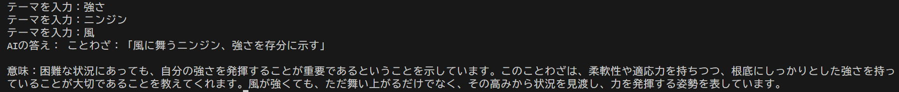
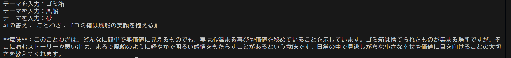
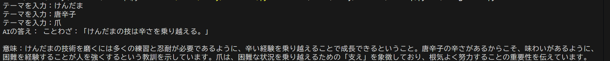

架空のことわざ、慣用句Bot
今回私はテーマを入力したらそのワードを使って架空のことわざや慣用句を
言ってくれるアプリを作りました。以下がそのソースコードです。
Xfrom openai import OpenAI
client = OpenAI(api_key="※APIキーを入力")
#ここにテーマを入力
a=input("テーマを入力：")
b=input("テーマを入力：")
c=input("テーマを入力：")
question =a+ b+c+"3つのテーマを取り入れた架空の短いことわざ、もしくは慣用句を言って、またその意味も教えて"
response = client.chat.completions.create(
model="gpt-4o-mini",
messages=[{"role": "user", "content": question}]
)
#---------------------------------------
print("AIの答え：", response.choices[0].message.content)
結果は、、、



3回実行すると1回だけすべてのテーマを組み込んだことわざが完成した。
精度としてはいまいちであるがことわざ自体の完成度は案外いいのではないかと感じた。
上手くいかない日があったときに自分を励ますときに使うと良いかもしれない。